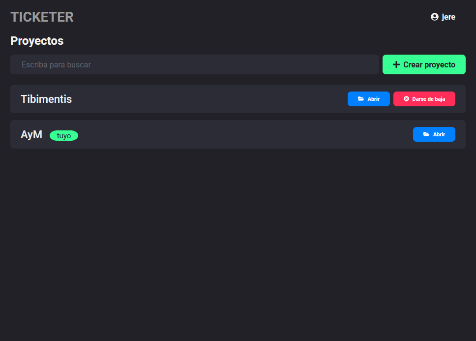
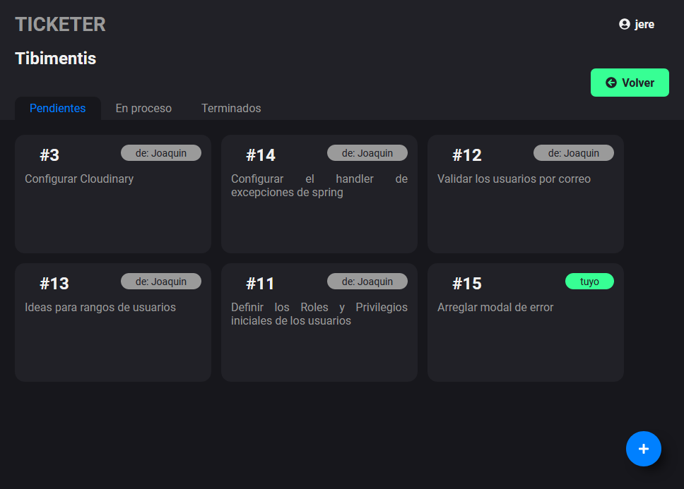
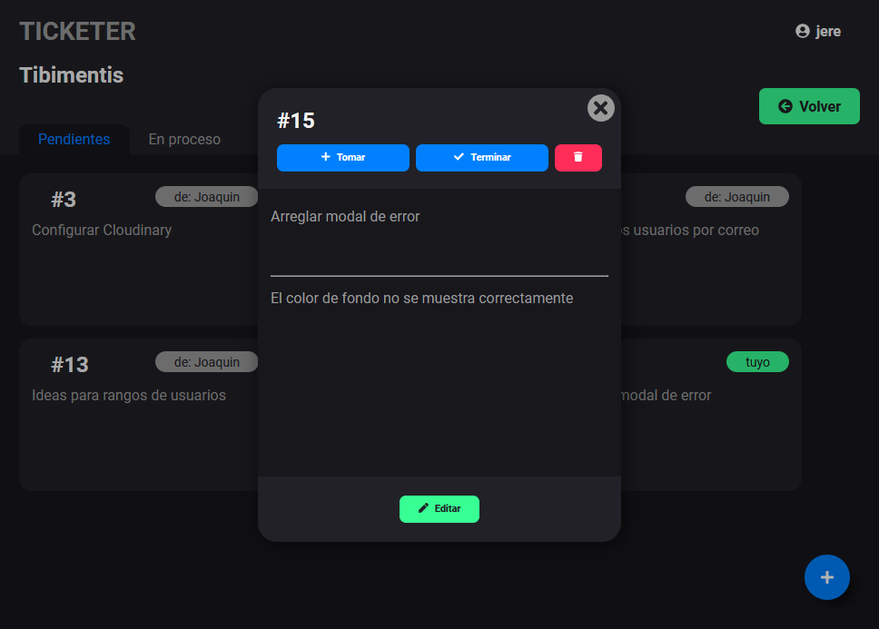
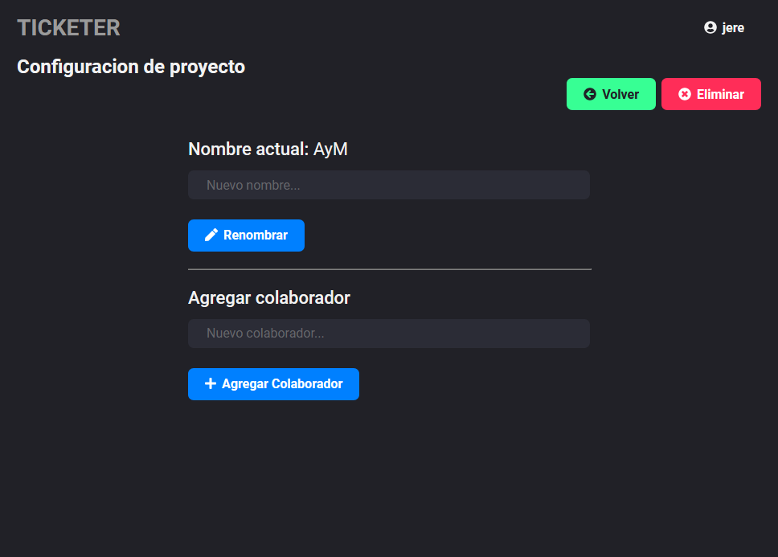

Ticketer




VER PAGINA
VER CODIGO FUENTE
Esta aplicación está alojada en un dyno gratis de Heroku, por lo tanto los tiempos de carga pueden ser lentos inicialmente
Acerca del proyecto
En equipoEs una aplicacion para controlar la division de tareas dentro de un proyecto, indica quien hizo y está haciendo cada cosa. Cada usuario se crea una cuenta y puede ser invitado a un proyecto existente o crear uno propio e invitar colaboradores